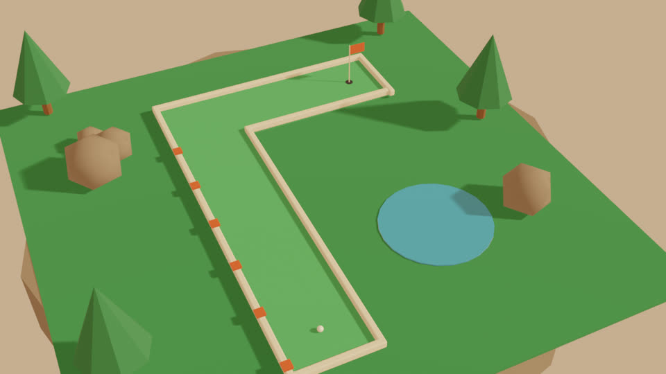
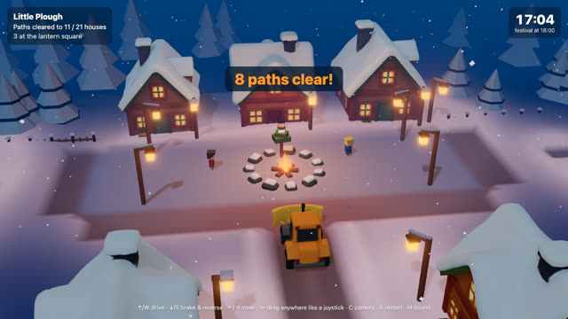
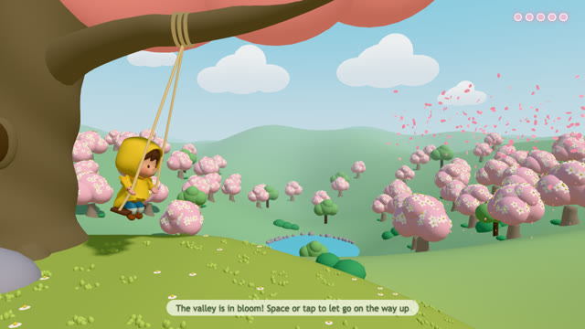

Island Putt


Prompt: “Make a 3D minigolf game that looks like reference/keyart.png”. Course, trees and rocks are Blender scripts; Rapier handles the ball. Generated music and sound effects: $0.29.
Example games built with the tomorrow-game-lab agent skills: three.js WebGPU (WebGL2 fallback), Rapier physics and Blender-scripted 3D assets, playtested in headless Chrome and scored by judge agents.
3-hole minigolf on a floating island. Drag back to putt, or use ←/→ and Space.
Play →
Plough the snowed-in village so every villager reaches the festival by 18:00. Built from a generated gameplay video. Arrow keys or drag.
Play →
Kick at the bottom of each swing to blow the orchard into bloom row by row, then let go and fly. Built from a generated gameplay video. Space or tap.
Play →Each game starts from a reference: a key-art image, or a short gameplay video that the agent generates itself from words. The agent reads it into an art bible (palette, light, camera, shapes) and an inventory of every prop and character, then builds the game to look like it. Judge agents compare screenshots with the reference until they pass.

Prompt: “Make a 3D minigolf game that looks like reference/keyart.png”. Course, trees and rocks are Blender scripts; Rapier handles the ball. Generated music and sound effects: $0.29.
Prompt: “Make a cosy game where a little snowplough clears paths through a snowed-in toy village”. The plough and the villager are 3D models generated from crops of the video, then rigged and animated in Blender; the village is a Blender script. All generated media: $2.04.
A tiny orange snowplough clears winding paths through a snowed-in toy village at dusk, pushing snow into soft heaps so little villagers can walk from their glowing houses to the lantern-lit square. Original cosy 3D driving game, low-poly flat-shaded toy look, warm window light against blue snow, soft long shadows, high three-quarter chase camera behind the plough. Real in-engine gameplay footage, one continuous take, no cuts, the player is clearly controlling the plough. Absolutely no text, no letters, no numbers, no HUD, no interface on screen.
An original idea from a one-line pitch. The child is a generated 3D model, rigged with seated swing clips in Blender; the hill, tree and orchard are Blender scripts. The judges took 10 rounds to pass it on looks (visual score 5.3 → 7.1). All generated media: $1.38.
A small child in a yellow raincoat swings on a long rope swing hanging from the big low branch of a huge old tree on a grassy hilltop, pumping higher and higher; at the top of each swing a gust of pink petals blows out over the valley and the bare orchard trees on the slopes below burst into pink and white blossom, one row after another. Original cosy 3D arcade game, low-poly flat-shaded toy look, rounded simple shapes, soft spring morning light, pastel green rolling hills, a small round blue pond at the bottom of the valley, a few soft white clouds. Side-on camera at the height of the swing seat, showing the whole swing arc, the tree trunk on one side and the valley spreading out behind and below. Real in-engine gameplay footage, one continuous take, no cuts, the player is clearly controlling the child on the swing. Absolutely no text, no letters, no numbers, no HUD, no interface on screen.
Install the skills into your agent, then ask for a game, optionally with a key-art image or video:
pnpm dlx skills add mhjort/tomorrow-game-labSource, skills and the lab test setup: github.com/mhjort/tomorrow-game-lab